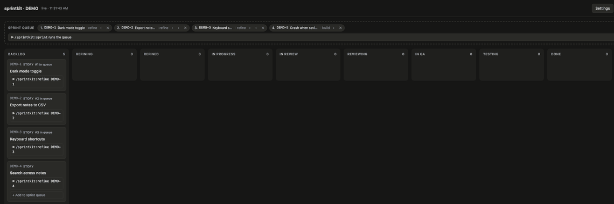

A team’s process.
A team of one.
An open-source Claude Code plugin that gives solo projects tickets, stages and quality gates. You choose who runs each stage: shipped agents, your skills, a shell command or yourself.
View on GitHubWatch a sprint run itself.
The live board opens in the browser and follows the work: tickets move from the backlog through refine, build, review and QA to done as each stage runs. When a gate isn’t passed, the ticket goes back a step.

Structure, without a fixed cast.
sprintkit owns the process; you decide who does each step. A stage can run on the agents it ships with, on your own skills, on a shell command, or on you.
- Refineclear requirement, acceptance criteria
- Buildbuild gate
- Reviewreview gate
- QAQA gate
- Donemerged
- Releasechangelog, tag
- Retroone process change
The three gates make the checks part of the work instead of an afterthought. Run one ticket by hand, or let the autopilot work through the sprint queue.
Bring a ticket.
Install the plugin in Claude Code, then create your first story.
/plugin marketplace add Haberhau/sprintkit
/plugin install sprintkit@sprintkit
/sprintkit:ticket story Users can switch to dark mode